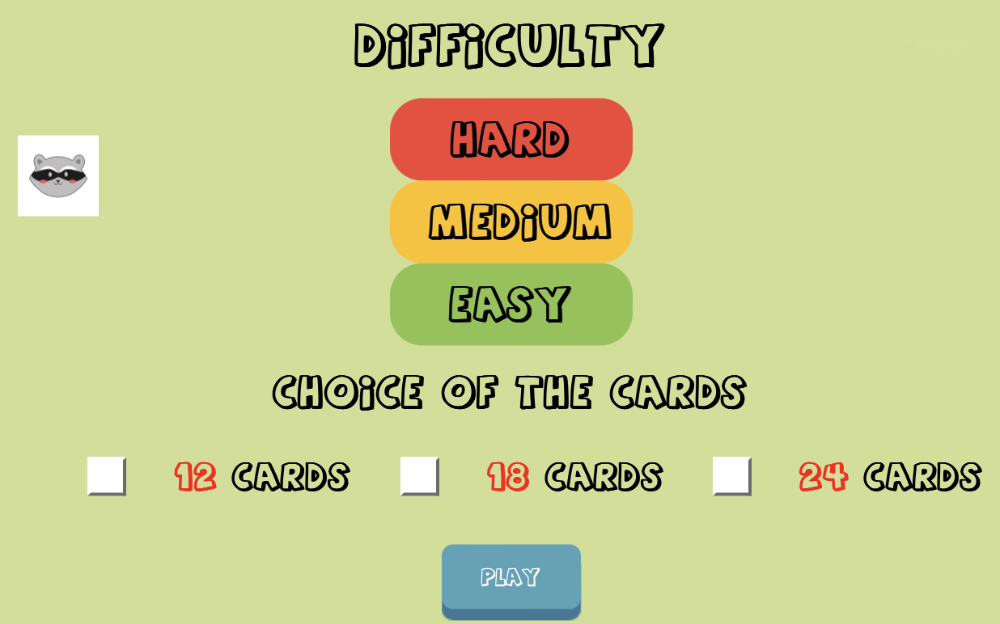

Memory
Développement Front-end
Découvrez mon jeu Memory en JavaScript, fruit d'une collaboration réussie. J'ai programmé le jeu, intégré des niveaux de difficulté et résolu les défis liés aux animations sur différents navigateurs. Le projet, responsive et visuellement attrayant, reflète l'application pratique des enseignements du cours de développement front-end. Explorez le code sur GitHub pour une expérience immersive et découvrez nos compétences affinées en JavaScript.

Dans le cadre de mon cours de développement front-end, j'ai collaboré avec deux camarades pour créer un jeu en JavaScript, le Memory, marquant la conclusion de notre module. Ma responsabilité était la programmation, tandis que mes collègues se sont penchés sur l'aspect graphique.
Le jeu consiste à retourner deux cartes pour révéler un élément graphique identique sur leur face cachée. L'objectif était d'appliquer toutes les connaissances acquises en cours, en relevant des défis tels que l'intégration de niveaux de difficulté variés, de contraintes de temps et de vies, tout en assurant une intégration visuellement harmonieuse des éléments graphiques et des animations.

Une difficulté majeure résidait dans la gestion des animations, avec des rendus différents d'un navigateur à l'autre, nécessitant une solution adaptée. Cette a consisté a modifié mon animation pour qu’elle ait un rendu cohérent partout.
Le jeu est responsive pour garantir une accessibilité maximale. GitHub a été utilisé pour gérer les versions du code, et VS Code comme éditeur de texte. Ce projet a été l'occasion de mettre en pratique les enseignements du cours et d'affiner mes compétences en JavaScript.